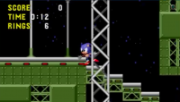

Sonic the Hedgehog (Genesis)
This article must comply with the non-Pokémon glitches guideline.
| Sonic the Hedgehog | |
| Wikipedia link | Sonic the Hedgehog |
| Developer(s) | Sonic Team |
| Publisher(s) | Sega |
| Platform(s) | Sega Genesis |
| Release date(s) | June 21, 1991 (North America) July 1991 (Europe) July 26, 1991 (Japan) |
Some parts of this article have not yet been fully reviewed by a member of this wiki's staff or QC team.
| |

|
Data from the Internet can be inaccurate or false, and it is easy to misremember information. For this reason there is more likely to be incorrect information in this article. This template will be removed once the information is peer-reviewed and tested by a staff or QC member. |
Sonic the Hedgehog is a platform game for Sega Genesis/Mega Drive from the popular Sonic the Hedgehog series by Sega and the first Sonic the Hedgehog game. It gained a sequel known as Sonic the Hedgehog 2.
Contents
Missing percussion glitch
The missing percussion glitch is a glitch that occurs in the Mega Drive/Genesis game Sonic the Hedgehog. The sound driver fails to load the drum samples for the music playing, due to the fade in routine after collecting an extra life. Collect an extra life and immediately pause once the extra life jingle stops, before the music fades in. The percussion track in the music will no longer play.
Notes
If the glitch is performed in the Special Stage, FM Channel 6 is disabled instead since this track has no percussion. The game doesn't need to be paused while performing the glitch while in the Special Stage, after gaining a life FM Channel 6 gets disabled. This glitch will not work in the Sonic Mega Collection port, and it is the only version of the game that the glitch will not work in.
| |
Zip Glitch
When Sonic is inside of a wall, pressing a direction will result in Sonic being sent in the opposite direction that the player pressed at much higher speeds than Sonic is normally capable of. Getting inside of a wall can be done with the debug mode or other glitches.
Marble Zone Skip Glitch
In Marble Zone Act 2, walk to the very edge of this rising and lowering platform at the beginning of the level so that Sonic clips partially into the floor like this.
Press right and immediately jump. Sonic's position will wrap around the level to the end of the level. If Sonic touches the level ending before it properly loads, the sign's sprite will become glitched out. A similar effect can be achieved in Act 3 at the rising platform at the very beginning here
but instead of clipping sideways into the wall Sonic will drop under the platform. Wait for the platform on the left to reach its highest point, and press right and immediately jump. Sonic will zip all the way to the Robotnik fight.
Labyrinth Zone Act 2 Skip
In Labyrinth Zone Act 2, press this button
and quickly jump onto the moving platform. Sonic will clip into the wall. Hold left and Sonic will zip to the end of the act.
Starlight Zone Act 1 Skip
In Starlight Zone Act 1, Use this moving platform to clip into the left wall like this.

Tap right to zip to the end of the level.
Labyrinth Zone Act 2 Crash
After clearing Act 2, hold down to pan the camera down and the game will crash with an illegal instruction exception.
Lives Underflow Glitch
In Labyrinth Zone Act 3, with only one life remaining and no rings, hold onto a pole with Sonic to the left of some spikes. Let Sonic drown and Sonic will drown, lose a life, and then die on the spikes, losing another life, and Sonic's extra life counter will underflow to 255.
External Links
| |